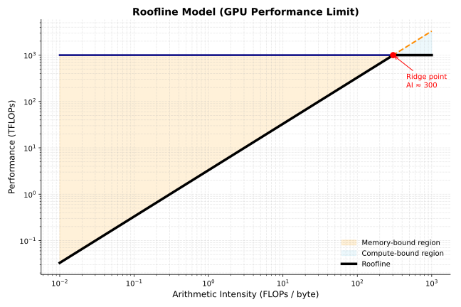

8 GPU Execution
The canonical question for this chapter: When the model runs, what is GPU actually doing? Why does the same operation take wildly different amounts of time depending on how it is scheduled, and how the data is laid out in memory?
8.1 Why GPU execution deserves its own chapter
Every previous chapter has mentioned GPU constraints in passing: memory bandwidth, arithmetic throughput, HBM capacity. This chapter makes those concepts precise.
Understanding GPU execution has direct impact ob system performance and it is not just an academic exercise for LLM engineers. A serving system operating at 60% of a GPU’s theoretical peak throughput can deliver 50% more throughput than one running at just 40%, without any additional hardware. This knowledge also explains why certain operations become bottlenecks, why quantization improves performance, why kernel fusion is so effective, and why the prefill and decode phases show different latency characteristics.
More directly: every optimization technique in serving (FlashAttention, continuous batching, tensor parallelism) exists because of specific GPU execution constraints. Understanding those constraints explains why the optimizations take the form they do, rather than appearing as a collection of unrelated tricks.
8.2 GPU architecture fundamentals
A modern GPU is not a fast CPU. It is a fundamentally different compute architecture optimized for a different class of problems.
8.2.1 The execution model
A CPU has a small number of powerful cores (typically 8–128), each capable of complex out-of-order execution, branch prediction, and deep caches. CPUs are optimized for latency and completing a single thread of execution as fast as possible.
A GPU has a massive number of simpler cores (an H100 has 16,896 CUDA cores) organized into streaming multiprocessors (SMs). Each SM is not particularly fast for a single operation, but thousands of them executing simultaneously produce enormous total throughput. GPUs are optimized to complete as many simple operations as possible per second, not completing any one operation quickly.
The programming model reflects on this: GPU programs are written as kernels that execute the same operation on many data elements simultaneously. A matrix multiplication kernel runs the same multiply operation on thousands of elements in parallel. If there is data parallelism in your problem, a GPU exploits it. If there is not, a GPU is slower than a CPU for that specific task.
LLM inference has enormous data parallelism: the same transformer operations apply to every token in the sequence, and every element of every weight matrix participates in the same type of computation. This structural match is why GPUs dominate LLM inference.
8.2.2 The memory hierarchy
GPU memory has multiple tiers with very different bandwidth and capacity:
Memory tier Bandwidth Capacity Latency
──────────────────────────────────────────────────────────
Registers ~80 TB/s 256 KB/SM ~1 cycle
L1/SRAM ~20 TB/s 256 KB/SM ~30 cycles
L2 cache ~5 TB/s 50 MB ~200 cycles
HBM (VRAM) ~3.35 TB/s 80 GB ~600 cycles
PCIe (CPU RAM) ~64 GB/s TBs ~microseconds
NVLink (GPU-GPU) ~900 GB/s — ~microsecondsSRAM (often called shared memory or L1 cache) is the GPU’s fast on-chip memory. It offers extremely low latency but limited capacity. HBM (High Bandwidth Memory), is the GPU’s large off-chip memory although it provides massive bandwidth, accessing HBM is still significantly more expensive than accessing on-chip memory.
Every GPU computation ultimately reads data from HBM and writes results back to it. As a result, the central challenge of GPU kernel optimization is reducing HBM traffic by keeping frequently accessed data in SRAM for as long as possible which is the exact key insight behind FlashAttention.
8.2.3 Streaming multiprocessors and warps
The Streaming Multiprocessor (SM) is the fundamental compute unit of an NVIDIA GPU. An H100 GPU contains many SMs operating in parallel, with each SM responsible for executing thousands of lightweight threads concurrently.
Each SM on an H100 contains:
- 128 CUDA cores for FP32 arithmetic operations.
- 4 Tensor Cores specialized for matrix multiplication.
- 256 KB of registers for storing temporary values used by active threads.
- 228 KB of on-chip SRAM, configurable between:
- L1 cache for automatically caching memory accesses.
- Shared memory for explicitly sharing data between threads in the same thread block.
- Warp schedulers that determine which groups of threads execute next.
GPU threads execute in groups called warps, where each warp consists of 32 threads. Unlike CPU threads, which execute independently, all threads within a warp execute the same instruction at the same time on different pieces of data. NVIDIA refers to this execution model as SIMT (Single Instruction, Multiple Threads).
For example, consider the following code executed by a warp:
if x > 0:
y = a + b
else
y = c + dSuppose that among the 32 threads in the warp 20 threads satisfy \(x > 0\) and 12 threads satisfy \(x <= 0\) The GPU cannot execute both branches simultaneously within the same warp. Instead, it execute \(y = a + b\) for the 20 relevant threads while the other 12 threads remain temporarily inactive and than execute \(y = c + d\) for the remaining 12 threads while the first 20 threads remain inactive. Conceptually, execution looks like:
Cycle 1:
[Active] Threads 0-19 -> y = a + b
[Inactive] Threads 20-31
Cycle 2:
[Inactive] Threads 0-19
[Active] Threads 20-31 -> y = c + dAlthough each thread only needs one branch, the warp executes both branches sequentially, reducing parallel efficiency whcih is known as branch divergence.
An H100 has 132 SMs. With 4 warp schedulers per SM and 32 threads per warp, the H100 can keep 132 × 4 × 32 = 16,896 threads active simultaneously.
8.2.4 Tensor cores
Standard CUDA cores perform scalar floating point operations. Tensor cores perform matrix multiplications directly in hardware, at much higher throughput.
An H100 tensor core performs a 16×16×16 matrix multiplication in a single operation. The H100 has 528 tensor cores, delivering approximately:
- 1,000 TFLOPS for BF16/FP16 matrix multiplications
- 1,979 TFLOPS for FP8 matrix multiplications
- 66 TFLOPS for FP32 scalar operations
The gap between tensor core throughput and scalar throughput explains why matrix multiplication is fast and why all other operations are relatively expensive on modern GPUs.
8.3 The roofline model
The roofline model is a simple framework for understanding whether a given operation is compute-bound or memory-bandwidth-bound, and what the theoretical maximum performance is:
Attainable performance = min(Peak FLOPS, Memory bandwidth × Arithmetic intensity)Where arithmetic intensity = FLOPs executed / bytes read from memory.

The ridge point is where the roofline transitions from memory-bound to compute-bound which is approximately 300 FLOPs/byte for the H100 (1,000 TFLOPS / 3.35 TB/s). Operations with arithmetic intensity above 300 are compute-bound and those below are memory-bandwidth-bound.
8.3.1 LLM operations on the roofline
Different operations in LLM inference have very different arithmetic intensities:
Large matrix multiplications (prefill, large batches): Matrix multiplication achieves high arithmetic intensity by reusing each byte of weight data for every sequence in the batch. For example, with a batch size of 32 and \(d_model = 4,096\), the arithmetic intensity is approximately 32 FLOPs/byte. This value approaches the roofline model’s ridge point, indicating that performance is primarily limited by computational throughput rather than memory bandwidth.
Vector-matrix products (decode, batch size 1): The Q projection at a batch size of 1 exhibits low arithmetic intensity because each byte of weight data is used in only one multiply operation. Consequently, the arithmetic intensity is approximately 1 FLOP/byte, which is about 300× below the roofline model’s ridge point. As a result, performance is severely limited by memory bandwidth, leaving the tensor cores underutilized.
Attention with KV cache (decode): extremely low arithmetic intensity. Reading the full KV cache and computing a dot product with the query vector. Memory- bandwidth-bound with near-zero compute utilization.
Softmax, layer norm, element-wise ops: essentially zero arithmetic intensity. Read data, apply a simple function, write it back. Pure memory bandwidth operations. No tensor core involvement.
The practical implication: for decode at small batch sizes, the GPU is almost entirely idle arithmetically, waiting for data from HBM. Increasing batch size is the primary lever for improving GPU utilization during decode, because it amortizes weight reads across multiple sequences and increases arithmetic intensity toward the ridge point.
8.4 Prefill vs. decode: two different regimes
The roofline analysis explains why prefill and decode behave so differently and they are not just slow and fast versions of the same operation. They are different hardware bottlenecks entirely.
8.4.1 Prefill: compute-bound
During prefill, all prompt tokens are processed simultaneously. The Q projection operates on a matrix of shape [n_prompt, d_model]:
Q projection: [n_prompt, d_model] @ [d_model, d_model]
FLOPs: 2 × n_prompt × d_model²
Bytes: d_model² × 2 (weight matrix, loaded once)
Arithmetic intensity = n_prompt FLOPs/byteFor n_prompt = 1,024 and d_model = 4,096: arithmetic intensity = 1,024 FLOPs/byte which is above the ridge point. Prefill is compute-bound. The H100 runs near its theoretical FLOPs ceiling. In order to make prefill faster it requires more FLOPs (more GPUs, higher clock speeds, or more efficient kernels).
8.4.2 Decode: memory-bandwidth-bound
During decode, only one new token is processed at a time. The Q projection operates on a vector of shape [1, d_model]:
Q projection: [1, d_model] @ [d_model, d_model]
FLOPs: 2 × 1 × d_model²
Bytes: d_model² × 2 (same weight matrix)
Arithmetic intensity = 1 FLOPs/byteFor d_model = 4,096: arithmetic intensity = 1 FLOPs/byte which makes decode memory-bandwidth-bound. The H100 runs at approximately 1/300th of its peak FLOPs utilization. Making decode faster requires loading weights faster, higher bandwidth memory, quantization (fewer bytes per parameter), or larger batches (sharing weight reads across sequences).
8.5 Kernel fusion
Each operation in a transformer block, such as layer normalization, Q/K/V projection, softmax, and residual addition, can be implemented as a separate CUDA kernel. In this approach, every kernel reads its inputs from HBM and writes its outputs back to HBM before the next kernel executes. While this design is straightforward to implement, it is inefficient because intermediate results are repeatedly transferred to and from HBM despite being needed only by subsequent operations.
Kernel fusion addresses this inefficiency by combining multiple operations into a single CUDA kernel. Intermediate results are retained in registers or on-chip shared memory (SRAM) rather than being written to HBM after each operation. Only the final output is stored in HBM, reducing memory traffic, increasing arithmetic intensity, and improving overall performance.
8.5.1 Example: fused layer norm and linear projection
Without fusion:
x_norm = layer_norm(x) # read x from HBM, write x_norm to HBM
q = x_norm @ W_Q # read x_norm from HBM, write q to HBMTwo HBM reads, two HBM writes, for data that is only an intermediate result.
With fusion:
Single kernel:
Read x from HBM once
Compute layer norm in registers/SRAM
Apply W_Q projection immediately
Write q to HBM onceOne HBM read, one HBM write. Memory traffic halved for this pair of operations. The intermediate x_norm never leaves the chip.
8.5.2 FlashAttention as kernel fusion
FlashAttention is the most impactful example of kernel fusion in LLM inference. The naive attention computation reads and writes the n×n score matrix multiple times (scaling, masking, softmax, and the final weighted sum). FlashAttention fuses all of these into a single kernel that keeps intermediate scores in SRAM.
The memory traffic reduction is from O(n²) to O(n). At long sequence lengths, this is the difference between attention fitting in available memory and not fitting at all. Chapter REFF covers FlashAttention in detail; the point here is that it is fundamentally a kernel fusion optimization, not an algorithmic approximation. The result is mathematically identical to naive attention.
8.5.3 Kernel fusion in practice
Production inference frameworks apply kernel fusion throughout the model:
- Layer norm fused into linear projections (Q, K, V, output projections)
- Attention scores, masking, and softmax fused (FlashAttention)
- Residual addition fused with layer norm
- Activation functions fused into FFN computation
- RoPE application fused into Q and K projection
The cumulative impact is typically 1.5–2× throughput improvement over naively separate kernels, primarily by reducing HBM traffic.
8.6 Precision and quantization at the kernel level
Quantization affects GPU execution at the kernel level, not just memory footprint. Understanding this distinction separates knowing what quantization does from knowing why it helps.
8.6.1 Weight-only quantization
The most common serving quantization scheme: model weights are stored in INT4 or INT8, but computation happens in BF16/FP16.
During a weight-only quantized matrix multiplication:
1. Load INT4 weights from HBM (4× fewer bytes than BF16)
2. Dequantize to BF16 in registers (fast, negligible compute overhead)
3. Multiply with BF16 activations via tensor cores
4. Accumulate in FP32, write BF16 output to HBMThe benefit: decode is memory-bandwidth-bound. Reducing weight bytes by 4× means 4× more weights can be streamed per second, directly improving decode throughput by approximately 4× for bandwidth-limited operations.
The cost: dequantization adds compute overhead. For bandwidth-bound operations (decode), this overhead is negligible. For compute-bound operations (prefill, large batches), dequantization adds meaningful overhead. Weight-only quantization therefore improves decode more than prefill, which is precisely where the improvement is most needed.
8.6.2 Activation quantization: INT8 and FP8
For compute-bound operations, quantizing both weights and activations to INT8 or FP8 allows tensor cores to operate at higher throughput:
- BF16 tensor cores: 1,000 TFLOPS
- FP8 tensor cores: 1,979 TFLOPS on H100 (approximately 2× faster)
Activation quantization is more complex than weight quantization because activations have more dynamic range and they can contain outlier values that cause large quantization errors when mapped to a narrow integer range.
The outlier problem. LLM activations contain outlier values in a small fraction of channels, values that are orders of magnitude larger than typical. These outliers are consistent across inputs and are a known property of large language models. Naive quantization sets the scale by the outlier, compressing all normal values to near-zero and destroying information.
LLM.int8() (Dettmers et al., 2022) addresses this by decomposing the matrix multiplication: outlier channels are computed in full BF16 precision, and the remaining channels (typically 99%+) are computed in INT8. The results are combined. Quality is preserved while most of the memory savings are retained.
SmoothQuant (Xiao et al., 2023) migrates the quantization difficulty from activations to weights, mathematically equivalent to scaling the activation channels down and the corresponding weight rows up before quantization. The result is more uniform activation distributions that quantize cleanly to INT8 without special outlier handling.
FP8 inference is available on H100 GPUs and has become the recommended precision for large-scale serving: near-BF16 quality at roughly 2× the arithmetic throughput. The H100’s Transformer Engine handles FP8 scaling automatically, making it practical without manual calibration.
8.7 Tensor parallelism at the kernel level
When a model is too large for a single GPU, tensor parallelism distributes weight matrices across multiple GPUs. The kernel-level implementation requires communication between GPUs at each layer.
8.7.1 Column and row parallelism
A linear projection Y = X @ W can be split in two ways:
Column parallelism splits W by columns:
W split into [W₁ | W₂] across 2 GPUs
GPU 0: Y₁ = X @ W₁ (partial output — subset of output dimensions)
GPU 1: Y₂ = X @ W₂ (partial output — complementary subset)
Combine: Y = [Y₁ | Y₂] (concatenation, no communication needed here)Row parallelism splits W by rows and requires split input:
W split into [W₁; W₂], X split into [X₁, X₂] across 2 GPUs
GPU 0: Y_partial₀ = X₁ @ W₁
GPU 1: Y_partial₁ = X₂ @ W₂
Combine: Y = Y_partial₀ + Y_partial₁ (all-reduce required)In a transformer layer: Q, K, V projections use column parallelism, each GPU computes a subset of attention heads. The output projection uses row parallelism. Attention within each GPU is independent; an all-reduce synchronizes after the output projection. The FFN follows the same pattern: column parallelism on the first layer, row parallelism on the second, with one all-reduce between them.
8.7.2 Pipeline parallelism and bubble overhead
Pipeline parallelism splits a transformer model across multiple GPUs by assigning different sets of layers to different devices. Instead of each GPU holding the full model, computation flows through GPUs sequentially, like an assembly line and each GPU processes a contiguous block of layers. To keep all GPUs busy, the input batch is divided into microbatches, which are then streamed through the pipeline:
Time step: 1 2 3 | 4 5 6 7 8 | 9 10 11
<-- Fill --> | <---- Steady state ---> | <-- Drain -->
GPU 0 (L0 –L24): [1] [2] [3] [4] [5] [6] [7] [8] · · ·
GPU 1 (L25–L48): · [1] [2] [3] [4] [5] [6] [7] [8] · ·
GPU 2 (L49–L72): · · [1] [2] [3] [4] [5] [6] [7] [8] ·
GPU 3 (L73–L96): · · · [1] [2] [3] [4] [5] [6] [7] [8]This creates a wave-like execution pattern where different GPUs work on different microbatches at different stages of the model. However, pipeline parallelism introduces idle time, known as the pipeline bubble. This occurs during pipeline fill (startup) and pipeline drain (shutdown), when not all GPUs are fully utilized.
Increasing the number of microbatches reduces bubble overhead by improving pipeline utilization, but it also increases memory usage and scheduling complexity. In practice, systems use 8–32 microbatches to keep bubble overhead under 10% while maintaining efficiency.
8.8 CUDA graph capture
Every GPU operation requires a kernel launch: the CPU sends an instruction to the GPU specifying which kernel to run with which parameters. For small operations, kernel launch overhead can dominate the actual execution time.
For a transformer decode step at batch size 1:
- Total arithmetic work: small (bandwidth-bound, most of step time is HBM reads)
- Number of kernel launches: hundreds (one per operation across all layers)
- Kernel launch overhead: ~5–10 microseconds per launch
Hundreds of launches × 5–10 microseconds = milliseconds of CPU overhead per decode step, for a step that may itself take only a few milliseconds of actual GPU work. The CPU becomes the bottleneck.
CUDA graphs capture the sequence of kernel launches and their data dependencies as a static graph, replayed without CPU involvement for each step. After the initial capture, subsequent replays bypass CPU overhead entirely.
For decode at batch size 1, CUDA graph capture reduces per-step latency by 30–50%. The tradeoff: the graph is captured for a specific batch size and sequence length; changing these requires recapture. Production inference frameworks use CUDA graphs for decode (fixed batch size and one new token per step) and not for prefill (variable sequence length per request).
8.9 Key takeaways
- GPUs are throughput-optimized processors with thousands of simple cores; LLM inference maps well to GPUs because transformer operations are highly data- parallel — the same computation applied to every token and every weight element
- The GPU memory hierarchy spans registers (80 TB/s) to HBM (3.35 TB/s) to PCIe (64 GB/s); kernel optimization is the art of keeping hot data in fast memory and minimizing HBM round trips
- Tensor cores perform 16×16×16 matrix multiplications in hardware at ~15× the throughput of scalar CUDA cores; every operation expressible as matrix multiplication should be
- The roofline model predicts whether an operation is compute-bound (arithmetic intensity above ~300 FLOPs/byte for H100) or memory-bandwidth-bound (below); prefill is compute-bound, decode is severely memory-bandwidth-bound at ~1 FLOPs/byte
- MFU for decode at batch size 1 is approximately 0.3% — the GPU is nearly idle arithmetically; batching and quantization are the primary levers for improving this
- Kernel fusion eliminates intermediate HBM reads and writes between operations; FlashAttention reduces attention memory traffic from O(n²) to O(n) by keeping scores in SRAM throughout computation
- Weight-only INT4/INT8 quantization reduces decode latency proportionally to the bit reduction, with negligible dequantization overhead when bandwidth-bound; FP8 activation quantization improves prefill throughput by ~2×
- CUDA graph capture eliminates CPU kernel launch overhead — 30–50% latency reduction for decode at small batch sizes — by replaying a static kernel sequence without CPU involvement

8.10 Further reading
- Williams et al. (2009). Roofline: An Insightful Visual Performance Model for Multicore Architectures. — The roofline model; essential reading for GPU performance analysis regardless of domain.
- Dao et al. (2022). FlashAttention: Fast and Memory-Efficient Exact Attention with IO-Awareness. — The most important kernel fusion example in LLM inference; the IO complexity analysis is the key insight.
- Dettmers et al. (2022). LLM.int8(): 8-bit Matrix Multiplication for Transformers at Scale. — The outlier problem and mixed-precision INT8 quantization.
- Xiao et al. (2023). SmoothQuant: Accurate and Efficient Post-Training Quantization for Large Language Models. — Migrating quantization difficulty from activations to weights for clean INT8 inference.
- Shoeybi et al. (2019). Megatron-LM: Training Multi-Billion Parameter Language Models Using Model Parallelism. — Tensor and pipeline parallelism; the foundational implementation reference.